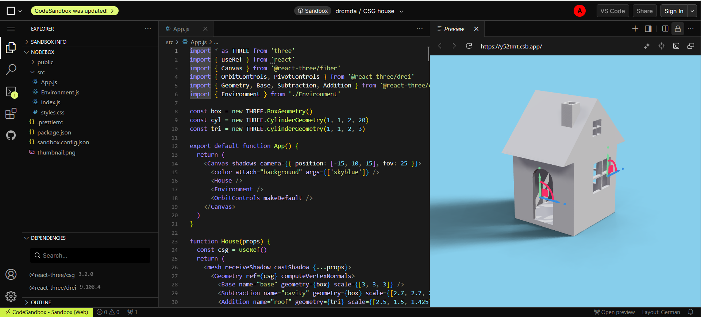
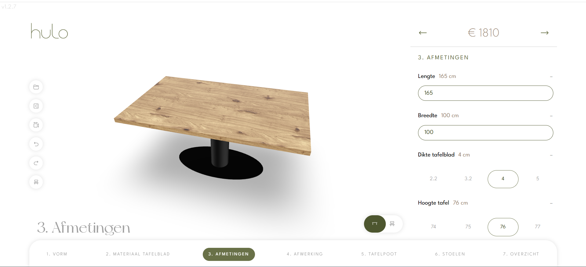
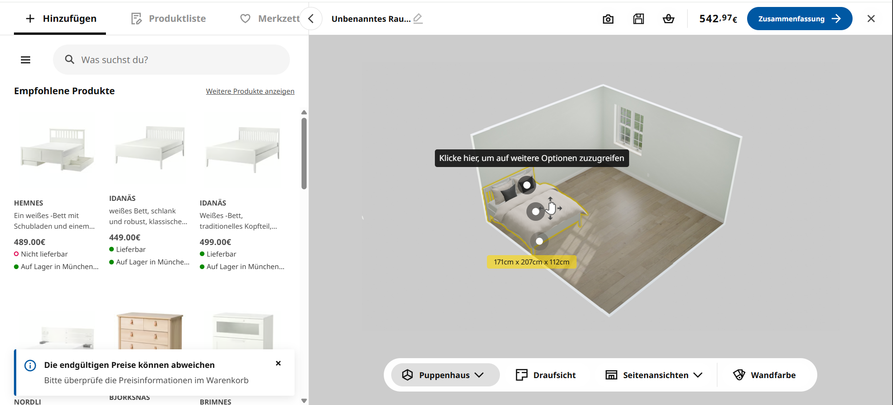

Vision Board – InspirationsBeispiele für Balkonmöbel
Dieses Dokument sammelt inspirierende Beispiele, die als Grundlage oder Motivation für die Entwicklung eigener Balkonmöbel dienen können.
Jedes Beispiel wird mit Link, kurzer Beschreibung, Bewertung (gut/schlecht) und möglichen Anpassungen für die eigene Umsetzung dokumentiert.
Beispiel 1: 3D-Assets
Link: https://boytchev.github.io/3d-assets/
Beschreibung:
Dieses Beispiel lässt verschiedene Beispiele über Parameter geometrisch modifizieren
Was ist gut:
- Parametrische Steuerung funktioniert sehr intuitiv.
- Einfaches Beispiel für Live-Anpassungen von Geometrien.
Was ist schlecht / verbesserungswürdig:
- Oberfläche wirkt technisch und nicht besonders „benutzerfreundlich“.
- Fokus liegt eher auf Demonstration, nicht auf Produkt-UX.
Was müsste ich ändern für meine Implementierung:
- Oberfläche ansprechender gestalten.
- Konkrete Möbel statt abstrakte Geometrien einsetzen.
- Evtl. Verbindung mit einer Datenbank für Maße und Preise.
Beispiel 2: csg-house
Link: https://codesandbox.io/p/sandbox/csg-house-y52tmt
Beschreibung:
Ein Modell eines Hauses, an dem sich Fenster und Türen verschieben lassen könngen inkl. des Sourcecodes

Was ist gut:
- Sehr gutes Beispiel für „parametrisches Modellieren“.
- Einfacher Einstieg in CSG (Constructive Solid Geometry).
Was ist schlecht / verbesserungswürdig:
- Nur ein Hausmodell, nicht direkt auf Möbel übertragbar.
- Oberfläche sehr roh und ohne visuelles Design.
Was müsste ich ändern für meine Implementierung:
- Möbelobjekte statt Häuser.
- Einfache Benutzeroberfläche für Endkunden.
- Exportierbare Daten (Stücklisten etc.) hinzufügen.
Beispiel 3: bang-olufsen Konfigurator
Link: https://www.bang-olufsen.com/de/int/composer?page=productselection
Beschreibung:
Konfigurator für Lautsprecher von bang-olufsen als Beispiel für eine gelugene Implementierung
Was ist gut:
- Sehr hochwertige User Experience.
- Kombination von Design und Konfiguration.
- Markenimage wird elegant integriert.
Was ist schlecht / verbesserungswürdig:
- Sehr komplexe Entwicklung, hoher Aufwand.
Was müsste ich ändern für meine Implementierung:
- Integration mit Fertigungs-Back-End.
Beispiel 4: hulo Tischkonfigurator
Link: https://hulo.be/configurator/
Beschreibung:
Konfigurator für Tische als Beispiel für eine gelugene Implementierung

Hier wird das vorgehen von einem Developer dieses Konfigurators beschrieben: discourse.threejs.org
Was ist gut:
- Direkt auf Möbel anwendbar (Tische).
- Parametrische Maßeinstellung.
- UX relativ einfach verständlich.
Was ist schlecht / verbesserungswürdig:
- Fokus nur auf eine Möbelart (Tische).
- Teilweise noch technisch in der Bedienung.
Was müsste ich ändern für meine Implementierung:
- Konfiguration auf Balkonmöbel erweitern (Stühle, Bänke etc.).
- Benutzerfreundlichkeit weiter optimieren.
- Verbindung zur Stücklisten-Generierung.
Beispiel 5: IKEA Home Planner
Link: https://www.ikea.com/de/de/planner/

Beschreibung:
Bekannter Möbelplaner, mit dem Kunden Räume und Möbel virtuell konfigurieren können.
Was ist gut:
- Sehr benutzerfreundlich und bekannt.
- Direkte Verbindung zur Bestellung.
- Nutzer können sofort ausprobieren.
Was ist schlecht / verbesserungswürdig:
- Teilweise überladen mit Features.
Was müsste ich ändern für meine Implementierung:
- Reduzierter Funktionsumfang für Balkone.
- Fokus auf Individualisierung statt Massenprodukt.